B GEBODSTEKENS
Rijnvaartpolitiereglement 1995
B.1 | Verplichting te varen in de richting aangegeven door de pijl. (artikel 6.12) | 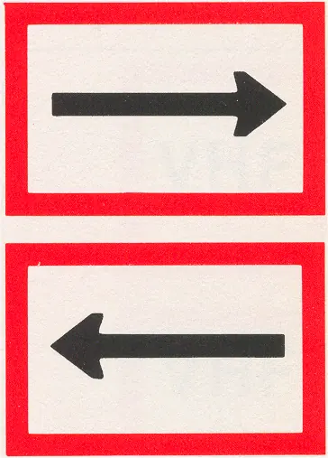 |
B.2 | a. Verplichting zich naar de bakboordszijde van de vaargeul te begeven. (artikel 6.12) | 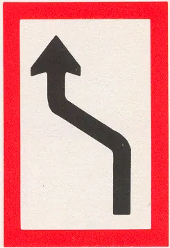 |
b. Verplichting zich naar de stuurboordszijde van de vaargeul te begeven. (artikel 6.12) | 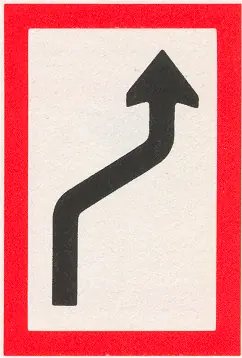 | |
B.3 | a. Verplichting de bakboordszijde van de vaargeul te houden. (artikel 6.12) | 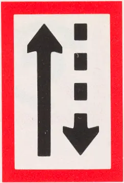 |
b. Verplichting de stuurboordszijde van de vaargeul te houden. (artikel 6.12) | 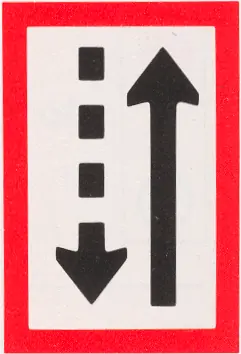 | |
B.4 | a. Verplichting de vaargeul over te steken naar bakboord. (artikel 6.12) | 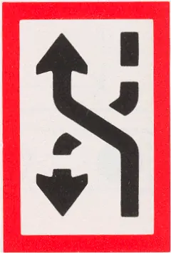 |
b. Verplichting de vaargeul over te steken naar stuurboord. (artikel 6.12) | 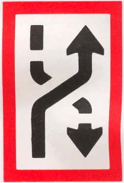 | |
B.5 | Verplichting vóór het bord stil te houden onder bepaalde omstandigheden. (artikel 6.28, lid 1) | 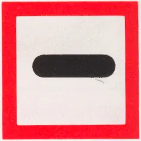 |
B.6 | Verplichting de vaarsnelheid te beperken, zoals is aangegeven (in km/u). | 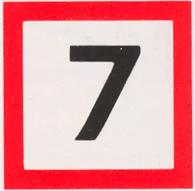 |
B.7 | Verplichting een geluidssein te geven. | 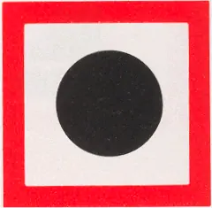 |
B.8 | Verplichting bijzonder op te letten. (artikel 6.08, lid 2) | 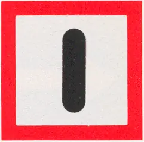 |
B.9 | a. Verplichting niet de hoofdvaarweg op te varen of over te steken, indien daardoor schepen op de hoofdvaarweg zouden worden genoodzaakt hun koers of snelheid te wijzigen. (artikel 6.16, lid 3) | 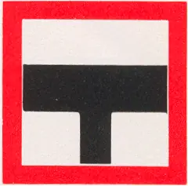 |
b. idem. | 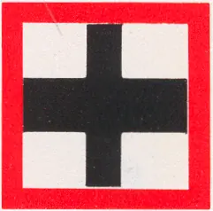 | |
B.10 | niet overgenomen | |
B.11 | a. Verplichting gebruik te maken van marifoon. (artikel 4.05, lid 6) | |
b. Verplichting gebruik te maken van marifoon op het aangegeven kanaal (artikel 4.05, lid 6). Voorbeeld: kanaal 11. | 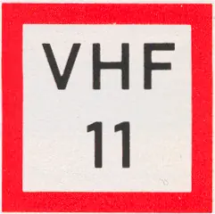 | |
B.12 | Verplichting tot het gebruik van Walstroomaansluitingen (zie artikel 7.06, derde lid) |